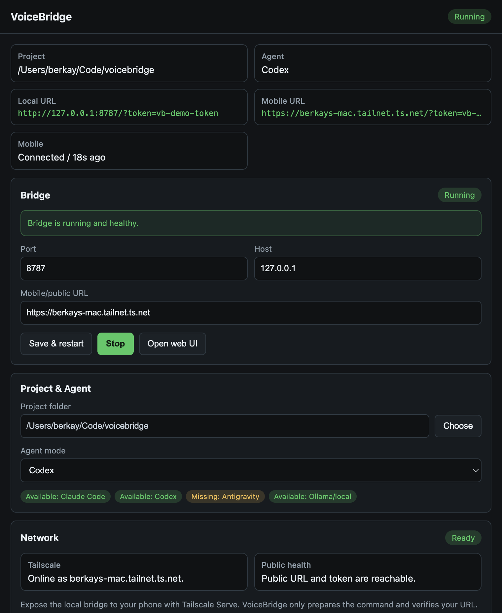

Talk to Claude Code, Codex, Antigravity, or Ollama directly from your phone. It keeps the session going across bridge restarts, does the work, and replies in chat and aloud. The desktop host starts the bridge, checks Tailscale, and pairs the mobile app with a QR.

A tiny Node bridge drives the CLI on your machine and streams everything to your phone, with browser voice by default or local Whisper when you want it.
Use the chat interface to type, or tap the mic to speak. The agent's replies are formatted beautifully and read aloud sentence-by-sentence.
Switch seamlessly between Claude Code, Codex, Antigravity, and Ollama (fully local). Each has adjustable autonomy modes.
Run "Claude on Repo A" and "Codex on Repo B" simultaneously. Claude, Codex, and Antigravity continuity survives bridge restarts.
Enter a continuous voice loop. The orb pulsates as you speak, the agent executes, and reads the reply back to you autonomously.
Everything runs over your private Tailscale network via HTTPS. Your codebase never touches a third-party voice cloud.
Use built-in browser STT/TTS, batch Whisper, or streaming Whisper over a local WebSocket for hands-free talking mode without a voice vendor.
Install the Mac DMG or Windows preview build, choose one workspace, pick Claude/Codex/Antigravity/Ollama, verify Tailscale, and pair your phone by scanning the desktop QR.
Your phone handles the voice layer, while the heavy lifting (the CLI) stays on your Mac or PC.
The desktop app is the easiest host setup. The terminal flow stays available for developers who want full control.
Install the Mac DMG or Windows preview installer, select your project folder and agent, copy the Tailscale Serve command, verify the public URL, then scan the pairing QR from the mobile app.
git clone https://github.com/berkayturanci/voicebridge voicebridge cd voicebridge && npm install # Optional: Set up your environment (PROJECT_DIR, ACCESS_TOKEN) cp .env.example .env # Start the server (prints a QR code) npm start # In a new terminal tab: Expose securely to your phone tailscale serve --bg http://127.0.0.1:8787
Tip: the desktop Network panel now distinguishes missing Tailscale, logged-out state, DNS/network failure, HTTP status, timeout, and token mismatch.